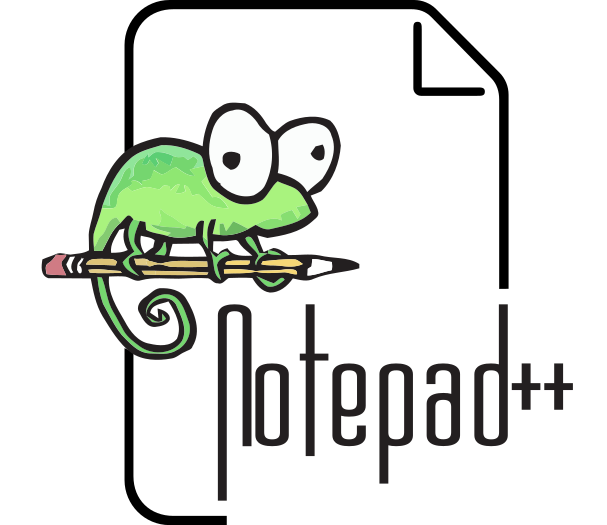
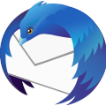

Productiviteit
Dit zijn programma's om je productiviteit hoger te maken.
Notepad++ (FOSS)
Notepad++ is een text editor. Het heeft veel meer functies dan de officiële Notepad van Windows. Ik gebruik het zelfs om deze website te maken!
OBS Studio (FOSS)
OBS is een manier hoe je video kan opnemen en streamen (met Twitch bijvoorbeeld). Discord heeft ook OBS ingebouwd.

KeePassXC (FOSS)
KeePassXC is een password manager en beveiligt en onthoud je wachtwoorden. Het is veel veiliger dan alles op te slaan in je browser.

Thunderbird (FOSS)
Thunderbird is een mail client, gemaakt door Mozilla (Mozilla heeft ook Firefox gemaakt). Het heeft veel features en je kan add-ons installeren net als Firefox.
LibreOffice (FOSS)
LibreOffice (libre betekend vrij/gratis) is een office alternatief voor Microsoft Office. Het kan niet online, maar heeft meer opties dan Microsoft Office en is gratis. Kan ook worden gebruikt op Linux. OnlyOffice (FOSS) is ook zeer goed.

Blender (FOSS)
Met Blender kan je 3D animaties maken.

GIMP (FOSS)
GIMP (GNU Image Manipulation Program) is een foto bewerk programma. GIMP is vooral voor Linux, maar is ook één van de beste op Windows (misschien beetje moeilijk in het begin). Het lijkt erg op Paint, maar het is sneller en heeft meer features.

Kdenlive (FOSS)
Kdenlive is een open source video editor, gemaakt door KDE.